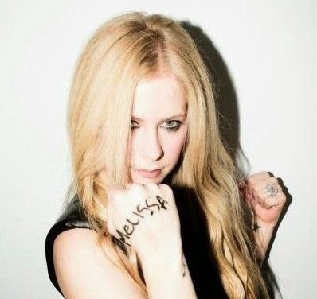

In an interview with 'Call her Daddy', Avril Lavigne has finally addressed the longstanding rumor that she tragically passed away in 2003 and was replaced by a body double named Melissa.
Lavigne called the rumor 'dumb', adding that "It's not that bad. It could be worse, right? I kind of feel like I got a good one. I don't think it's negative or anything creepy."
Which I thought was an excellent point. Among the rumors that plague Hollywood's A-listers, the idea of a body double stepping in after your untimely demise is surprisingly tame as a lot of conspiracies go.
But that got me thinking, if a rumor that dark sits on the 'tame' side of its counterparts, how hard would it actually be to pull it off?
I'm onto you, Melissa (Just kidding, love you Avril if you ever read this).
So for this article, I'm gonna be covering the Avril Lavigne replacement theory.
Preconception
If you grew up in the 2000s, you probably listened to Avril Lavigne. She wasn't just the it-girl of punk pop but she was also just unavoidable in any kind of public setting. The pseudo-edge that her music at the time embodied was perfect for maintaining the interest of teens that wanted to look cool and suburban mothers that didn't want their kids listening to anything too provocative.
Thus, I fall in the bracket of teens who grew up with the 'old' Avril. The person that sang "Girlfriend" and "Complicated" and lamented in interviews about the fact that she had 'some punk characteristics or whatever'. The 'new' Avril that started dabbling in mildly appropriative j-pop in a Stefani-esque turn of events came as a surprise to me. Cutesy aesthetics like that felt like such a stark departure from the Avril Lavigne I had come to expect.
So when I heard the theory (At about 15 years old) I thought "Yeah, that checks out."
Here's the thing, Hollywood back in the day ran with some pretty wild courses of action to preserve the integrity of their industry. You only need to take a brief look into the questions surrounding the deaths of stars like Marilyn Monroe or Michael Jackson before you start to see the dubious nature that runs through the entire production. In my view, if the executives who make decisions about the careers of their clients could replace them with a doppelganger after their deaths? They would. No questions asked.
But as I got older and a little more savvy about how the arts industry works, I could more easily see some holes in this logic. Functionally, the idea that an event like the death of Avril Lavigne would have escaped the notice of the ravenous paparazzi of the early 2000s is just a little too far-fetched for me. Especially when you consider the fact that the origin of this theory is an anonymous blogger.
Which brings me quite neatly to the research:
Research
The theory comes from a Brazilian blog called Avril Esta Morta made in 2011. The premise is incredibly specific despite the lack of sources: Avril, overwhelmed by fame and the death of her grandfather, took her own life in 2003. To keep the money flowing, her label replaced her with a lookalike named Melissa Vandella, whom they had already been using as a body double to distract paparazzi (Avril Esta Morta, 2011).
Strangely, the biggest piece of evidence put forward in this claim is an almost forensic analysis of Avril's skin. Proponents have spent years comparing high-resolution photos from the Let Go era to the Under My Skin era and beyond. They point to birthmarks on her arms and neck that seem to have shifted positions or disappeared entirely.
Huge problem right out the gate there, birthmarks can fade.

So either we're gonna have to accept the "Theo Jackson from Encryptid replaced" Theory, or we acknowledge that this evidence is pretty inadmissible.
And truth be told, that was how a lot of this evidence appeared to me. The "smoking gun" for a lot of believers was a promotional photoshoot where Avril has the name "Melissa" written in Sharpie on the back of her hand. Theorists claim this was the moment where Avril's replacement felt some twisted sense of guilt over her actions and wanted to leave a breadcrumb for the fans.

The problem with that is that the photoshoot is for a fundraiser in which Lavigne wrote noteworthy donor names on her hands and arms.

The last piece of evidence I feel the need to bring forward before I put this theory in the grave (Much like Avril amiright) is that multiple sources have stated (Including Avril herself in the Call her Daddy interview) that the original blogger has since retracted and apologised for the claim.
In the interest of full disclosure, I haven't actually seen any first person sources that verify this account. But frankly I don't think I'd put any more stock in the claim even if he was.